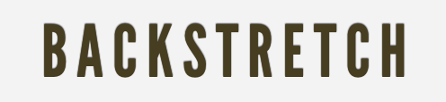

Slideshow
Adding simple movement
Backstretch

Allows you to add a dynamically-resized, slideshow-capable background image to any page or element.
Download from here.
Include the plugin
<script src="jquery.backstretch.min.js"></script>
Add a script tag in the head of your html, linking to the plugin file.
Initialise the plugin
The backstretch website says to use the following code:
$.backstretch([
"http://dl.dropbox.com/u/515046/www/outside.jpg",
"http://dl.dropbox.com/u/515046/www/garfield-interior.jpg",
"http://dl.dropbox.com/u/515046/www/cheers.jpg"],
{duration: 3000, fade: 750}
);
You can copy this code from the Backstretch website.
Make sure to put in your own image URLs!
Header-only slideshow
We can restrict our slideshow to be displayed inside an element.
$('header').backstretch([
...
);
We want ours to play in the background of the header, so we add $('header') to the start of our code.

Slideshow: Complete!
Well done! You now know the basics of using jQuery.
Loading...